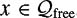
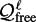

|
| |||||||||||||
|
|
||
The planners discussed in this chapter sample points in  and connect them using a local planner. As opposed to exact motion-planning algorithms, such as [90, 306, 361,373,375], it is possible that PRM and other sampling-based motion planners can report falsely that no path exists. It would seem that the correctness of the motion planner has been sacrificed in favor of good experimental performance. This, however, is not exactly the case. Rather than being a purely heuristic technique, a weaker completeness property, called probabilistic completeness, can be proved to hold for PRM as was discussed in the introductory section of this chapter.
and connect them using a local planner. As opposed to exact motion-planning algorithms, such as [90, 306, 361,373,375], it is possible that PRM and other sampling-based motion planners can report falsely that no path exists. It would seem that the correctness of the motion planner has been sacrificed in favor of good experimental performance. This, however, is not exactly the case. Rather than being a purely heuristic technique, a weaker completeness property, called probabilistic completeness, can be proved to hold for PRM as was discussed in the introductory section of this chapter.
This section deals with probabilistic completeness proofs and analyses of the basic PRM planner. In the basic PRM planner, samples are chosen from a uniform random distribution. Although the presented results are for an idealized version of PRM,it is strongly conjectured that probabilistic completeness results can be extended to conditional random sampling and to deterministic sampling, in the latter case, in the form of resolution completeness results.
Suppose that can be connected by a path in . PRM is considered to be probabilistically complete, if for any given (a, b)

where Pr[(a, b)FAILURE] denotes the probability that PRM fails to answer the query (a, b) after a roadmap with n samples has been constructed. The number of samples gives a measure of the work that needs to be done and hence it can be used as a measure of the complexity of the algorithm.
The results presented in this section apply to the basic PRM algorithm. Section 7.4.1 analyzes the operation of PRM in a Euclidean space. Using this analysis, it is possible to gain an estimate on how much work (as measured by the number of generated samples) is needed to produce paths with certain properties. Section 7.4.2 shows how certain goodness properties of the underlying space affect the performance of PRM. It is this analysis that sheds light on why PRM works well with extremely simple sampling strategies such as uniform sampling. Experimental observations indicate that many of the path-planning problems that arise in physical settings have goodness properties, such as the ones described in section 7.4.2, that may not require elaborate sampling schemes. Both analyses prove probabilistic completeness for PRM. Section 7.4.3 shows an equivalence between the probabilistic completeness of PRM and a much simpler planner.
This section provides an analysis [222,223] of PRM operating in Euclidean . Assuming that a path between two different configurations a and b exists, it is shown that the probability of PRM failing to connect a and b depends on (1) the length of the known path, (2) the distance of the path from the obstacles, and (3) the number of configurations in the roadmap. Connecting a and b by a long path requires a larger number of intermediate configurations to be present in the roadmap. Paths that are closer to obstacles are harder to obtain because of potential collisions. Similarly, paths that are inside narrow passages are harder to obtain because the probability of placing random configurations inside narrow passages is small. The probabilistic completeness of PRM is proved by tiling the known path with a set of carefully chosen balls and showing that generating a point in each ball ensures that a path between a and b will be found.
Let be an open subset of [0, 1]d and let dist be the Euclidean metric on . The local planner of PRM connects points when the straight-line ab lies in . A path γ in from a to b consists of a continuous map , where γ (0) = a and γ (1) = b. The clearance of a path, denoted clr(γ), is the farthest distance away from the path at which a given point can be guaranteed to be in . If a path γ lies in , then clr(γ) > 0.
The measure μ denotes the volume of a region of space, e.g., μ([0, 1]d) = 1. For any measurable subset , μ(A) is its volume. For example, an open ball of radius ε centered at x is denoted by Bε(x) and its volume is given by μ(Bε(x)). The uniform distribution is used by PRM to sample points. If is a measurable subset and x is a random point chosen from by the point-sampling function of PRM, then
Let a, such that there exists a path γ between a and b lying in . Then the probability that PRM correctly answers the query generating n configurations is given by
where L is the length of the path γ, ρ = clr(γ ), B1(·) is the unit ball in and
| Proof |
Let ρ = clr(γ) and note that ρ > 0. Let and observe that there are m points on the path a = x1, ..., xm = b such that dist(xi, xi+1) < ρ/2. Let yi ∊ Bρ/2(xi) and yi+1 ∊ Bρ/2(xi+1). Then the line segment yiyi+1 must lie inside where the last inequality follows from the union bound [119]. The events Ii = 0 are independent since the samples are independent. The probability of a given Ii = 0is computed by observing that the probability of a single randomly generated point falling in Since the sampling is uniform and independent, then 
However for σ defined as in the statement of this theorem. The bound is obtained by using the relation (1 − β)n ≤ e−βn for 0 ≤ β ≤ 1: |
As shown from the proof above, a better estimate for Pr[(a, b)FAILURE] is available than the exponential bound given in theorem 7.4.1. The exponential bound is a simplification that allows the direct calculation of n when the user wishes to specify an acceptable value for Pr[(a, b)FAILURE]. The proof of theorem 7.4.1 can be extended to take into account that clearance can vary along the path [223]. Theorem 7.4.1 implies that PRM is probabilistically complete. Moreover, the probability of failure converges exponentially quickly to 0.
This section argues how PRM roadmaps capture the connectivity of based on the analysis of [192, 196, 197, 228, 229]. A principal intuition behind PRM has been that in spaces that are not "pathologically" difficult, that is in spaces where reasonable assumptions about connectivity hold, the planner will do well even with simple sampling schemes such as random sampling.
Observe that, in the general case, can be broken into a union of disjoint connected components . Let G = (V, E) be the roadmap constructed by PRM with uniform sampling. For each and let Gi be the subgraph of G induced by Vi. In the rest of this section, it is shown how to determine the number of configurations that should be generated to ensure that, with probability exceeding a given constant, each Gi is connected.
Given a subset S of , the reachable set from S is the set of configurations in that are visible from any configuration in S. Figures 7.18(a) and (b) show an example.
Let . The reachable set of S is defined as
The shorthand reach(x) is used instead of reach({x}) when .
A space is ε-good if the volume of that each point in can reach is at least an ε fraction of the total free volume of .
The β-lookout of a subset S of a connected component of is the subset of S for which each configuration in that subset can reach more than a β fraction of . An example is given in figure 7.18(c).
Let β be a constant in (0, 1]and let S be a subset of a connected component of . The β-lookout set of S is defined as
The following definition captures how reachability spreads across the space.
Let ε, α and β be constants in (0, 1]. A space is (ε, α, β)-expansive if
it is ε-good, and
for any connected subset of , μ (lookoutβ(S)) ≥ αμ(S).
The first condition of definition 7.4.4 ensures that a certain fraction of is visible from any configuration in . The second condition ensures that each subset has a large lookout set. It is reasonable to think of S as the union of the reachability sets of a set V of points. Large values of α and β indicate that it is easy to choose random points from S such that adding them to V results in significant expansion of S. This is desirable since it allows for a quick exploration of the entire space. Figure 7.19 gives an example of an expansive space and indicates the values of ε, α and β.
We now introduce the concept of a linking sequence, which will be used in the development that follows.
A linking sequence of length ℓ for a configuration is a set of configurations x1 = x, x2, ..., xℓ with an associated sequence of reachable sets X1 = reach(x1), , where for all 1 < i ≤ ℓ,
The proof of the main result relies on two technical lemmas, whose proofs are given in [192]. Lemma 7.4.6 gives a bound on the probability of sampling a linking sequence for a given configuration x in terms of α, ε, and t, the length of the linking sequence.
Let V be a set of n configurations chosen independently and uniformly at random from . Let s = 1/αε. Given any configuration x ∊ V, there exists a linking sequence in V of length t for x with probability at least 1 − se−(n−t−1)/1
Lemma 7.4.7 gives a lower bound on the volume of Vt for an arbitrary linking sequence of length t.
The main result of this section follows. Given a number δ, the theorem finds n such that if 2n + 2 configurations are sampled, then each subgraph Gi is a connected graph with probability at least 1 − δ. This indicates that the connectivity of the roadmap G conforms to the connectivity of . It means that, with high probability, no two connected components of G lie in the same connected component of .
Let δ be a constant in (0, 1]. Suppose a set V of 2n+2 configurations for
is chosen independently and uniformly at random from . Then, with probability at least 1 − δ, each subgraph Gi is a connected graph.
| Proof |
Let x and y be any two configurations in the same connected component . Divide the remaining configurations into two sets V′ and V″ of n configurations each. By lemma 7.4.6, there is a linking sequence of length t for x in V′ with probability at least 1 − se−(n−t)/s. The same holds true for y and V. Let Xt(x) and Xt(y) be the reachability sets determined by the linking sequences of length t of x and y. By choosing t ≥ 1.5β, lemma 7.4.7 is applied to ensure that μ(Xt(x)) and μ(Xt(y)) are larger than . It follows that . It is known that , because is an ε-good space; the visibility region of any point in Let B be the event that x and y fail to connect in Gi. By applying a union bound and by the linking sequence construction, it follows that By choosing n ≥ 2t and recalling that s = 1/αε, A graph Gi will fail to be connected if some pair x, y ∊ Vi fails to be connected. There are at most such pairs and the probability of this occurring is at most where the last inequality follows from the observation that n/2 ≥ 4s ln n for n ≥ 8s ln(8s). By requiring that n ≥ 8s ln(8s/δ), it follows that It is sufficient to choose n ≥ 8s ln(8s/δ) + 2t for this argument to succeed. By substituting s = 1/αε and t = 1.5β into this expression, the stated result is obtained. |
Theorem 7.4.2 implies probabilistic completeness, although some additional argumentation is needed. The main limitation of the above analysis is the reliance on the α, β, and ε constants being nonzero. This will be true for any polyhedral space. Since any configuration space can be well approximated with a polyhedral space without changing its connectivity, theorem 7.4.2 holds. A detailed analysis can be found in [37,192,196,197].
In this section, theorem 7.4.1 is generalized by reducing the set of assumptions to a bare minimum. The new assumptions are sufficient for defining the planner's sampling scheme and the notion of reachability. In fact, the structural requirements for the configuration space are very simple and are captured by the mathematical abstraction of a probability space: essentially a space over which probability can be defined. In the new framework, the balls used to tile a path in theorem 7.4.1 can be replaced with arbitrary sets of strictly positive measure. These sets are not necessarily connected or open. The analysis is introduced in order to consider PRM operating on motion-planning problems with difficult configuration spaces, and with complex local planners such as those arising from motion planning with dynamics, deformable objects, objects with contact, and others [252]. The framework presented in this section enables a rigorous treatment of asymmetric reachability, nonmanifold configuration spaces, and sampling from arbitrary distributions. Hence, it reveals the applicability of the PRM scheme to problems beyond basic path-planning. A detailed analysis can be found in [252].
As before, the distribution for configuration generation is encoded with the probability measure μ. So if , then μ(A) is the probability that a random sample from lies in A. The local path planner is further generalized away from a straightline planner and is instead replaced with an arbitrary binary relation, R. Informally, xRy means y can be reached using the local planner from x. Note that xRy need not imply yRx. More precisely, the set is the set of all query configurations that can be connected by the local planner. For example, if and the local planner is a straight-line planner, then
It is required that R is measurable in . Membership in R is written interchangeably as (x, y) ∊ R or x Ry.
This section develops two distinct ideas from these definitions. A simple motion planner based on random incremental construction of a path is stated in algorithm 15. First, it will be shown that PRM is probabilistically complete if and only if algorithm 15 can answer correctly on every query with nonzero probability. Second, it is proved that probabilistic completeness implies a bound on Pr[(x, y)FAILURE] similar to the one stated in theorem 7.4.1.
Algorithm 15 succeeds with nonzero probability on every query if and only if PRM is probabilistically complete. Furthermore, if PRM is probabilistically complete, then there exist constants ℓ ≥ 0 and p > 0 such that
where n is the number of configurations in the roadmap.
| Proof |
First, the equivalence between PRM and algorithm 15 is proven. Suppose that algorithm 15 succeeds on query (x, y) with probability P > 0. The probability of generating each intermediate point along the path from x to y is the same for algorithm 15 and PRM, since they both sample randomly from the same distribution μ. Hence, PRM succeeds on query (x, y) with probability P > 0. For the converse, suppose that after constructing the roadmap, PRM succeeds on query (x, y) with probability P > 0. Choose n to be the minimum number of configurations in the roadmap for the previous statement to be true. Since n is the smallest such number, then every configuration of the roadmap appears exactly once as an intermediate point of the path connecting x to y. Note that it does not matter in what order the configurations are generated: the roadmap is permutation invariant. Since the samples are independent, it suffices to consider only the solutions where the path is generated in order and conclude that the probability of this occurring is then . Algorithm 15, after running for n iterations, would have probability at least of succeeding. This concludes the proof of the probabilistic completeness equivalence between algorithm 15 and PRM.It remains to show that the probability of failure for PRM decreases exponentially with the number of samples generated. Define Rℓ to be the ℓth iteration of R, i.e., Suppose PRM is probabilistically complete. For any query (x, y), there exists an ℓ such that a sequence of ℓ guesses is a path from x to y with probability P > 0. Let S ⊂ Rℓ be the set of guesses which are length ℓ paths from x to y. The probability of choosing such a sequence of ℓ points is μℓ(S) = P > 0 (it can be shown that S is measurable in ). The set S is decomposed into a union of disjoint rectangles, i.e., Choose i such that is maximized. Observe that it must be larger than zero. Let x1, ..., xℓ be any set of points such that xj ∊ Aij. It follows that xRx1 R ... RxℓRy by construction of S. Let The probability that PRM fails to find a path between x and y after generating n configurations is therefore bounded by the probability that no such x1, ..., x is contained in the configuration set. Let Ij be an indicator variable that witnesses the event of the configuration set containing a point from Aij. Finally, note that ℓ ≥ 0 and p > 0. |
It is interesting to note that the symmetry and reflexivity properties of the local planner were never used in the proof. In particular, the proof will still hold for an asymmetric and irreflexive local planner. This is a natural way to incorporate the notion of time into PRM planning. Also, the sampling distribution is not necessarily uniform. The obtained bound is of the same form as the previous bounds and shows that probabilistic completeness ensures an inverse exponential bound on failure probability in terms of the number of configurations in the roadmap.
|
|
||
|